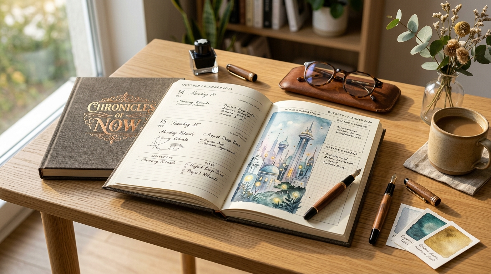

20년간 시각디자인 현장에서 길러온 감각과 인문학적 통찰로, 차가운 인공지능에 따뜻한 인간의 체온을 불어넣습니다. 단순한 프롬프트 기술을 넘어, 아날로그와 디지털이 공존하는 독창적인 창작 경험을 제안합니다.

픽셀을 넘어 손으로 만져지는 실물 창작의 감동
AI의 우연한 결과물에 끌려다니지 않습니다. 기획과 의도, 디자인의 기본 원리에 입각하여 내가 원하는 방향으로 인공지능을 능동적으로 디렉팅하는 힘을 가르칩니다.
차가운 모니터 속 픽셀에만 머물지 않습니다. 종이의 질감, 인쇄와 제본, 손끝으로 전해지는 물성을 통해 '내 삶에 실체로 남는 창작물'을 완성하는 희열을 선사합니다.
무분별한 복제와 비판 없는 수용을 경계합니다. 특히 미성년자와 입문자에게는 올바른 창작 윤리와 따뜻한 피드백을 통해 두려움 없이 표현할 수 있는 안전한 환경을 보장합니다.
20년이 넘는 세월 동안 온·오프라인의 온갖 시각디자인 프로젝트를 지휘하며 오직 완벽한 시각적 해답만을 좇던 현업 디자이너였습니다. 대중 앞에 서는 것은 언제나 두려운 일이었고, 무대공포증은 오랜 숙제였습니다.
하지만 AI가 쏟아져 나오던 날, 기술의 속도에 압도되어 창작의 기쁨을 잃어가는 수많은 이들을 보았습니다. "내가 20년간 책과 음악, 미술 현장에서 쌓아온 디자인의 본질을 나눈다면, 이들이 길을 잃지 않겠구나."
“혼자 가르치는 강의실이 아닌, 함께 대화하고 마음을 나누는 창작 살롱을 만들었습니다. 두려움을 극복하고 수강생들과 눈을 마주쳤을 때, 비로소 세상에 하나뿐인 따뜻한 예술이 탄생했습니다.”
단순 툴 학습이 아닌, 디자인 철학과 실물이 결합된 깊이 있는 프로젝트형 커리큘럼입니다.
생성형 AI로 나의 한 해 목표와 영감을 시각화하고, 20년 차 디자이너의 그리드 시스템에 맞춰 편집한 뒤 실제 하드커버 종이 다이어리로 인쇄·제본하여 소장하는 전천후 융합 프로젝트입니다.
내 삶의 키워드와 인문학적 AI 프롬프팅
타이포그래피, CMYK 색감, 레이아웃 실무
특수 제본과 촉각적 종이 다이어리 탄생
무분별한 이미지 생성이 아닌, 상업적 인쇄와 디지털 화면에 즉시 투입 가능한 하이엔드 AI 그래픽 제작 노하우를 전수합니다.
미성년자와 입문자를 위해 저작권과 표절의 경계를 배우고, AI를 긍정적인 자기표현의 친구로 활용할 수 있도록 돕는 인성·창의 융합 캠프입니다.
우리의 작업은 모니터 화면에서 끝나지 않습니다. 3단계 융합 파이프라인을 체험해 보세요.
단순히 "예쁜 풍경 그려줘"가 아닙니다. 읽었던 책의 한 구절, 바흐의 무반주 첼로 모음곡에서 느껴지는 무게감, 에드워드 호퍼의 고독한 빛을 언어화하여 AI에게 디렉팅합니다.
• 형용사 나열이 아닌 '맥락(Context)'을 설정하는 법
• 예술사조와 영화 미학의 시각적 언어 사전 구축
• 인간만이 던질 수 있는 질문으로 독창적 비주얼 유도
AI가 뽑아준 이미지는 원석일 뿐입니다. 20년 실무 디자이너의 감각으로 여백, 시선의 흐름, 폰트의 크기와 굵기를 1mm 단위로 조율하여 상업적 가치를 지닌 그래픽으로 재탄생시킵니다.
• 완성도를 10배 끌어올리는 타이포그래피 황금비율
• 인쇄소에 넘겨도 오류 없는 CMYK 컬러 프로파일링
• 불필요한 시각적 노이즈를 덜어내는 미니멀리즘 디렉팅
완성된 데이터는 특수 지류와 패브릭 패브릭 하드커버, 금박 인쇄 공정을 거쳐 나만의 이름이 새겨진 실물 다이어리로 제본됩니다. 디지털과 아날로그의 경계가 무너지는 순간입니다.
• 종이 두께와 질감에 따른 잉크 발색의 이해
• 180도 펼쳐지는 견고한 실제 제본 공정 체험
• 세상에 단 1권뿐인 나만의 아날로그 예술품 소장
기술의 장벽을 넘어 함께 만들어가는 과정에서 발견한 감동의 피드백입니다.
“단순히 프롬프트 치는 법만 배울 줄 알았는데, 제 삶의 이야기를 경청해 주시고 그것을 책으로 엮어내도록 이끌어주셨습니다. 다른 어디서도 경험해보지 못한 깊은 울림이었습니다.”
“디자인 전공자가 아니라서 위축되어 있었는데, 강사님의 따뜻한 칭찬과 꼼꼼한 1:1 디렉팅 덕분에 용기를 얻었습니다. 완성된 다이어리를 받아 든 날 눈물이 핑 돌았어요.”
“20년 차 실무 디자이너의 눈썰미는 역시 달랐습니다. AI가 무작위로 뱉은 이미지 중에서 무엇을 남기고 버려야 하는지 '보는 눈(심미안)'을 길러주셔서 실무에 큰 도움이 되었습니다.”
20년 차 시각디자이너가 책, 영화, 고전 예술에서 엄선한 품격 있는 프롬프트 가이드북(PDF)을 무료로 보내드립니다.
기업 연수, 공공기관 특강, 청소년 캠프, 1:1 멘토링 문의를 남겨주시면 24시간 내 회신드립니다.